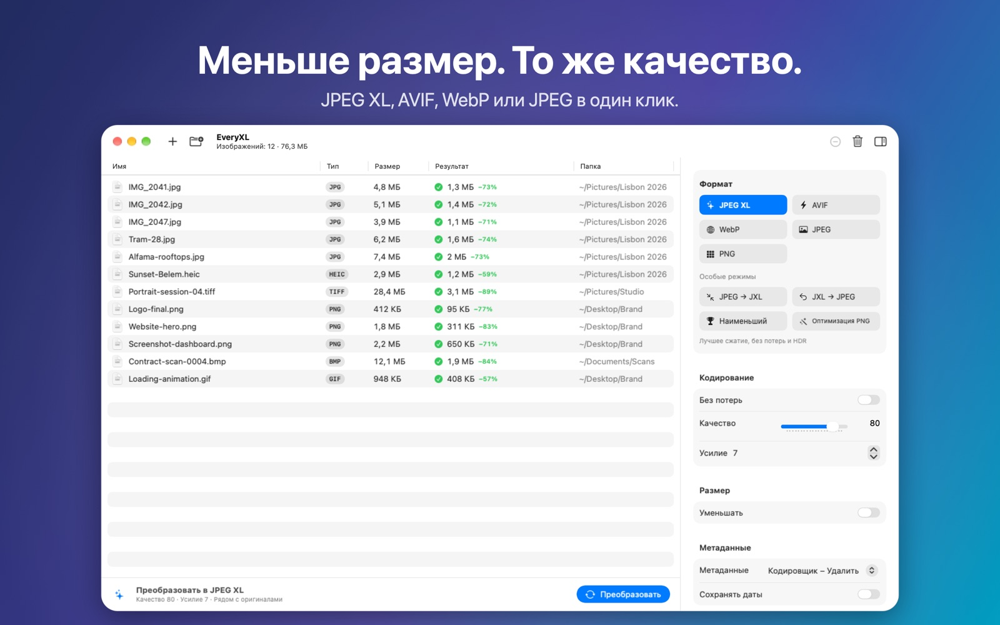

Меньше размер. То же качество.
Уменьшайте фото и графику с помощью современных форматов. Преобразуйте целые папки в JPEG XL, AVIF, WebP или JPEGLI параллельно — быстро, приватно и без интернета.
Скоро в Mac App StoreТребуется macOS 14 или новее · Apple silicon и Intel

Возможности
Современные форматы
JPEG XL, AVIF, WebP, JPEGLI и PNG — меньше размер при том же качестве.
JPEG → JXL без потерь
JPEG примерно на 20% меньше, а оригинал можно восстановить бит в бит.
Пакетно и параллельно
Перетаскивайте целые папки. EveryXL задействует все ядра Mac.
Размер и метаданные
Шесть режимов изменения размера, управление EXIF/XMP/GPS и сохранение дат.
Конфиденциально
Всё работает на вашем Mac. Без аккаунтов, загрузок и отслеживания.
Нативно
Создано для macOS на SwiftUI, на шести языках.